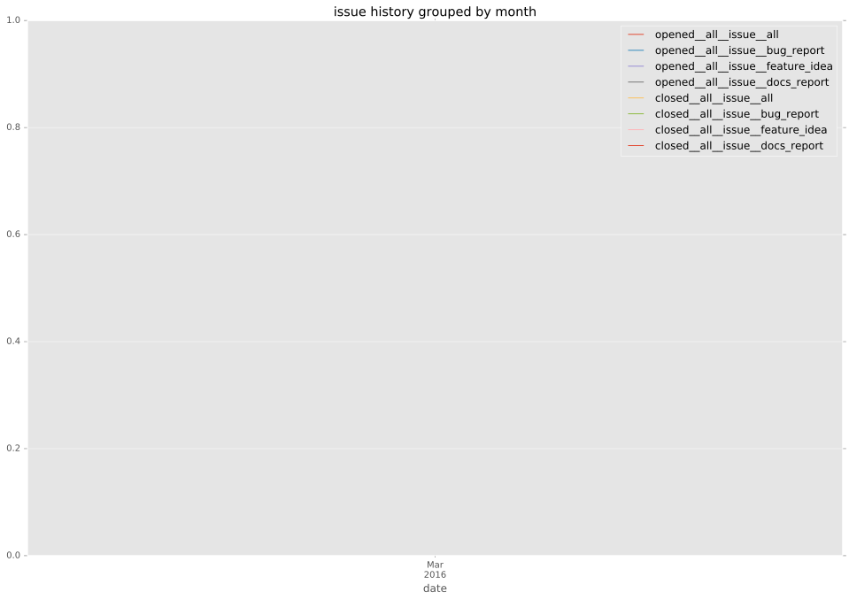
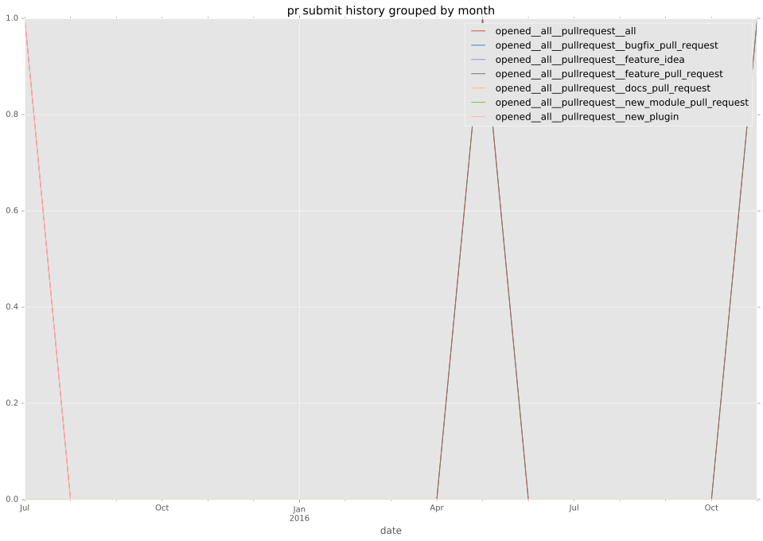
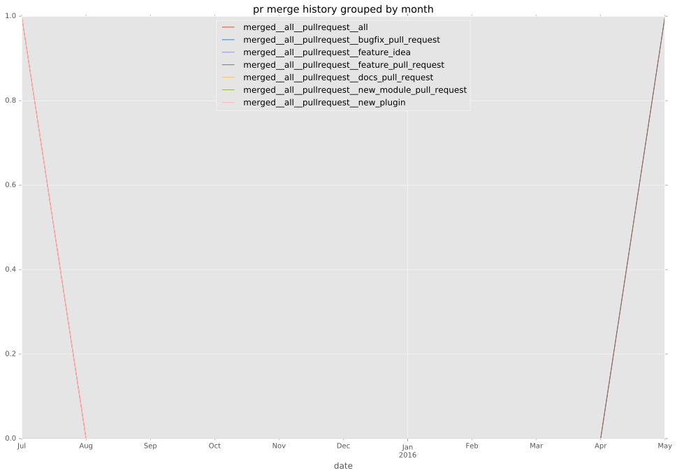
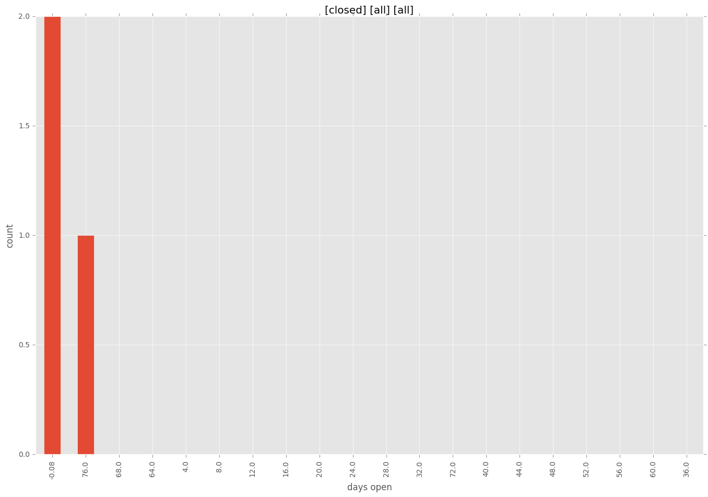
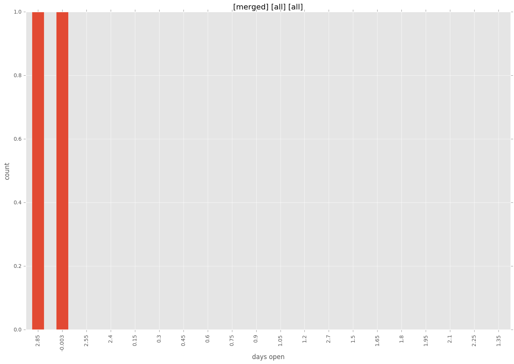
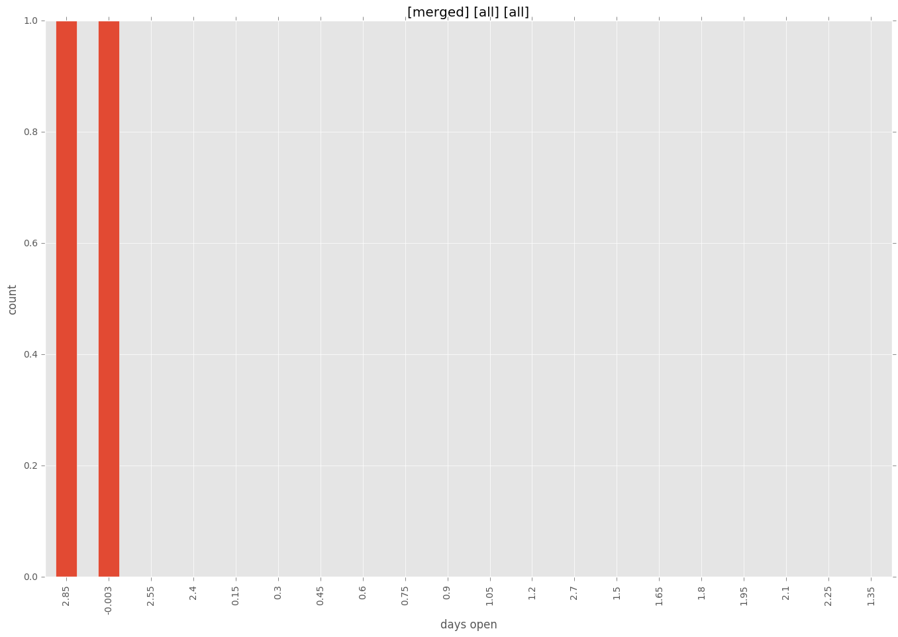

authors
- resmo
maintainers
- resmo
- dazworrall
contributors
- resmo : 26 commits
total issue counts
feature pull request: 1
pullrequest: 2
issue: 1
new plugin: 1
bug report: 1
issue history

pullrequest history


days open by issue type
all
count: 5
std: 35.1382981944
min: 0
max: 80
median: 3.0
mean: 17.2
pullrequest
count: 0
std: nan
min: nan
max: nan
median: nan
mean: nan
feature pull request
count: 2
std: 0.0
min: 3
max: 3
median: 3.0
mean: 3.0
issue
count: 0
std: nan
min: nan
max: nan
median: nan
mean: nan
new plugin
count: 2
std: 0.0
min: 0
max: 0
median: 0.0
mean: 0.0
bug report
count: 1
std: nan
min: 80
max: 80
median: 80.0
mean: 80.0
closures grouped by total days open



 
